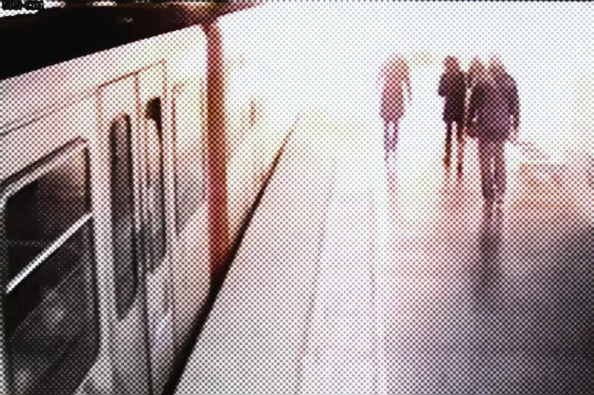
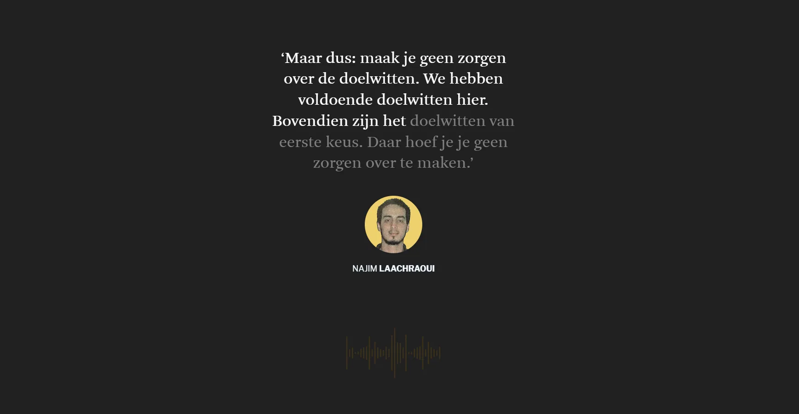
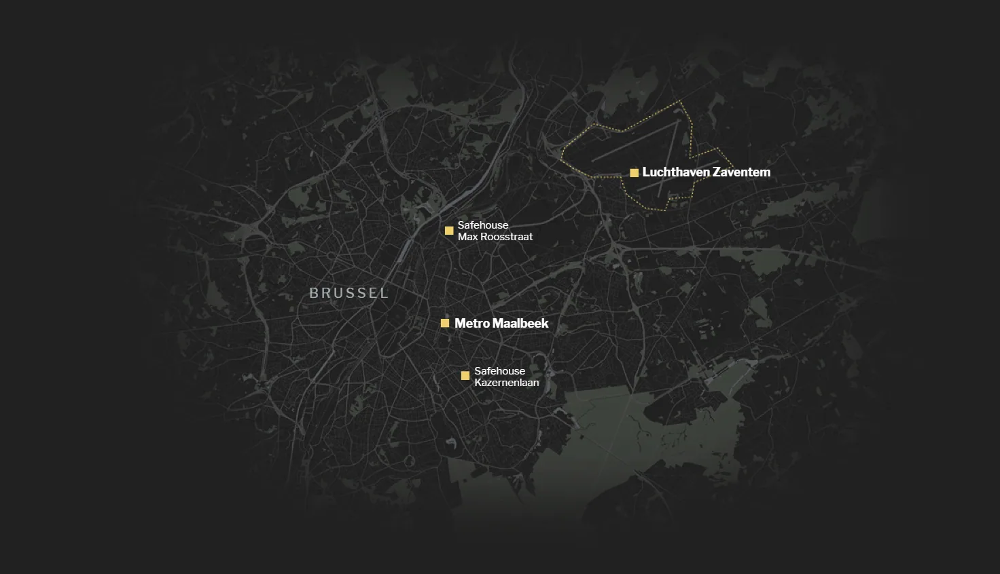
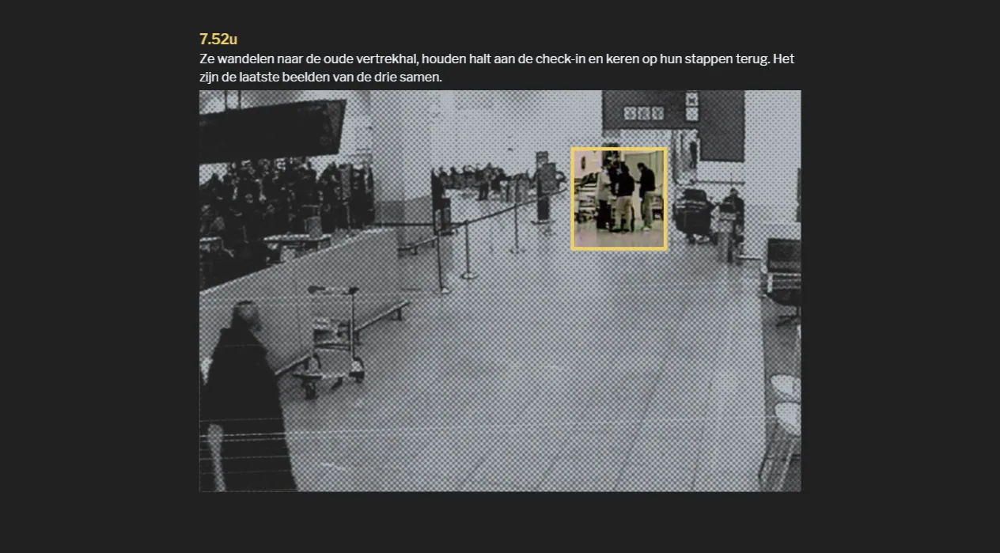
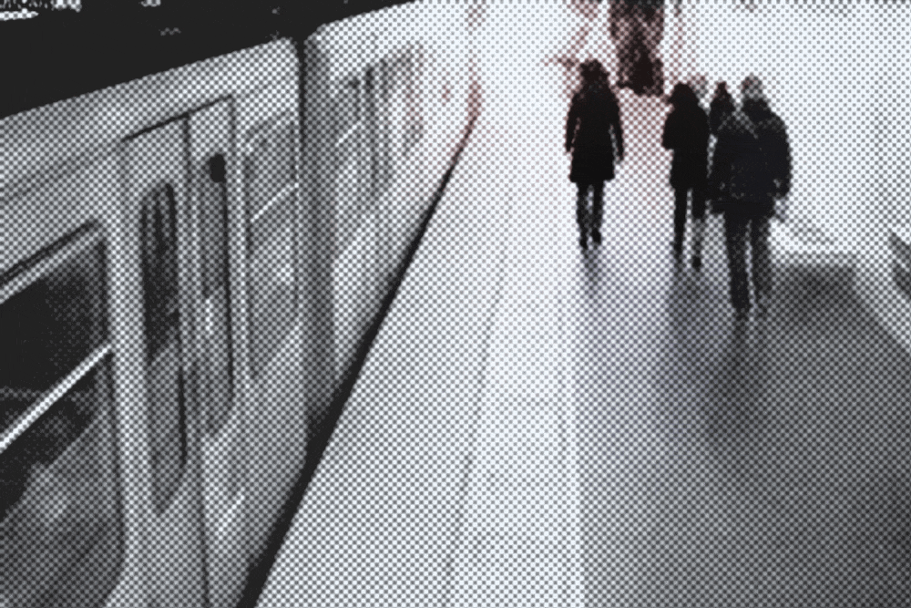

A minute-by-minute reconstruction of the attacks on Zaventem airport and Maalbeek metro station, built around testimonies, CCTV footage and audio recordings from the judicial file.

It was the first time readers could hear the voices of the suicide bombers. Together with the CCTV footage from the file, which we presented through scrollytelling, we guided readers step by step through the events.


The memorial section at the end of the piece gives each name and face of the 32 victims a place – a deliberate choice, so the story would end not only as a news reconstruction but also as a commemoration. The project was nominated for the Belfius Press Prize.


Made with
Made by
- Mark Eeckhaut
- Text
- Tina Boeykens
- Design & development
- Andy Stevens
- Design & development